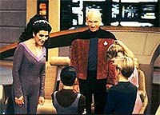
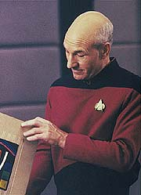
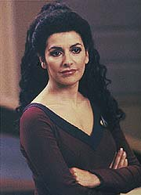
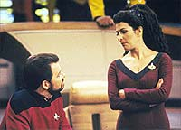
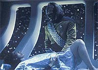

|
MANCHETE
DO EPISDIO
Episdio
sem enredo coloca a
tripulao em situaes inusitadas
Episdio
anterior | Prximo
episdio
Sinopse:
Data Estelar: 45156.1.
 Em
um momento de descontrao, o capito Picard conduz trs
vencedores de um concurso escolar de cincias por um tour pela
Enterprise. Justamente quando ele est para comear o passeio, a
nave encontra um fenmeno identificado como um filamento quntico,
que causa srias avarias. A comunicao entre diferentes reas
da nave cortada e membros da tripulao ficam presos. Picard e
as crianas esto em um turboelevador, Beverly e Geordi esto
presos na rea de carga, onde eles so ameaados por uma combinao
de radiao e contineres de material perigoso. Riker, Worf, Data
e a esposa grvida do chefe O'Brien, Keiko, tratam os feridos no
bar panormico. Enquanto isso, Troi, a oficial mais graduada na
ponte, obrigada a assumir o posto de capito.
Riker e Data elaboram um plano para alcanar a engenharia e
restaurar a energia, deixando Worf cuidando dos feridos. Mas antes
que eles cheguem a seu destino, eles ficam presos em um corredor
estreito por onde atravessa uma corrente eltrica. Na ponte, Troi
apela para O'Brien e Ro para obter o conhecimento tcnico necessrio
para tomar decises. Para complicar a situao da conselheira, O'Brien
e Ro discordam sobre o curso a ser seguido. Os dois s concordam em
uma coisa: a nave est sob perigo de explodir, caso nada seja
feito.
 Incapaz
de encontrar algo forte o suficiente para interromper o fluxo de
energia que est no caminho para a engenharia, Data oferece seu prprio
corpo. O andride garante a Riker que ele pode proteger seu crebro
dos efeitos da energia e manter suas faculdades mentais intactas.
Como no h alternativa, Riker aceita a proposta de Data. Enquanto
o corpo do andride danificado, sua cabea sobrevive como o
prometido, e Riker a remove.
Enquanto isso, o capito Picard, embora ferido, organiza as
aterrorizadas crianas em um esforo para escapar pelo teto do
turboelevador. Na rea de carga, Beverly e Geordi decidem que sua
nica esperana abrir a porta esterna, permitindo evacuar para
o espao os contineres e terminar com o incndio radioativo. No
bar panormico, Keiko comea a entrar em trabalho de parto, para
desespero de Worf.
Na ponte, Ro e O'Brien continuam em conflito. Ro insiste que o nico
meio de evitar uma exploso separar a seo disco da
engenharia, abandonando a poro inferior da nave deriva. Ro
acredita que no haja sobreviventes na engenharia, mas O'Brien
aponta que no h meio de saber, j que a aquela rea est sem
energia. Forada a tomar uma deciso, Troi opta por no separar a
nave e desviar energia para a engenharia, para ajudar quem quer que
esteja preso l.
 Ro
a adverte de que esse procedimento poderia significar a destruio
da nave toda, mas Troi permanece firme. Enquanto isso, Geordi e
Beverly conseguem executar seu plano, despressurizando a rea de
carga. Ao alcanar a porta da engenharia, Riker conecta a cabea
de Data ao painel de controle, usando a energia de sua bateria para
abrir a porta. Ele e Data ficam surpresos ao descobrir que h
energia naquele setor da nave, e rapidamente reanimam o gerador
quebrado, restaurando a fora em toda a nave. Picard e as crianas
so libertados do turboelevador, e Keiko d luz, com a ajuda de
Worf, a uma garotinha, Molly.
Comentrios:
Uma coisa se pode
dizer a respeito de "Disaster" sem medo de errar:
que o enredo , verdadeiramente, um desastre. No porque seja pssimo,
mas porque simplesmente no existe. A idia foi simplesmente
deixar a nave em pedaos para colocar a tripulao da Enterprise
em situao difcil e inusitada.
E o problema que o roteiro nem chega a admitir que trata-se
apenas de um episdio destinado a complicar a vida dos personagens
em situaes engraadas --um "alvio cmico" de 46
minutos. Em vez disso, ele tenta transmitir a aura de que um episdio
srio, com um real dilema e um conflito.
No surpreendente, portanto, que os trechos ligados diretamente
"histria sria", como a tentativa de Riker e Data de
chegar engenharia e o conflito de comando vivido na ponte da
Enterprise no tenham sido to felizes.
 A
encarnao do dilema do episdio, feita por O'Brien, Ro e Troi,
por maior que tenha sido o esforo do trio, no convenceu. Isso
fez das cenas na ponte as mais arrastadas do episdio. A
conselheira no comando no convence em um instante sequer de sua
capacidade para liderar (ela quase engana ao ser confrontada por Ro
Laren, mas no chega l).
A nica reflexo interessante deste conflito observar o
posicionamento dos produtores acerca de Ro Laren e Miles O'Brien.
Tendo em vista o desejo de Michael Piller e Rick Berman de ter esses
dois personagens em Deep Space Nine (Ro acabaria substituda
por Kira Nerys, depois que Michelle Forbes recusou o convite para
ser uma atriz regular na nova srie), seria este conflito mais uma
daquelas sementes que teriam como destino brotar no seriado
seguinte? Pode at ser apenas uma coincidncia, mas no leva
muito jeito.
Enquanto isso, a caminho da engenharia, a situao no est
melhor. A subtrama de Riker e Data, em que o andride obrigado a
sacrificar seu prprio funcionamento, fazendo com que o
primeiro-oficial seja obrigado a transportar apenas sua cabea, est
l apenas porque os roteiristas acharam que seria divertido
desmantelar o andride. Nada mais.
 Entretanto,
nem tudo em "Disaster" ruim. Algumas sequncias
especficas, geralmente ligadas estritamente aos personagens e sem
vnculo direto com a suposta "histria" do episdio,
deram bons frutos. Worf fazendo o parto de Keiko hilrio, assim
como Picard tendo de superar sua implicncia com crianas para
escapar do turboelevador. O capito cantando "Frre
Jacques" com o trio infantil mais parece uma cena do programa
global "Gente Inocente", mas no deixa de ser engraado.
Finalmente, Geordi e Crusher, presos na rea de carga, no fazem
muito a diferena do episdio. Apenas mais uma subtrama em um episdio
sem trama principal. No chegariam nem a comprometer, no fosse a
insistncia dos roteiristas em achar que o nico problema da falta
de ar a respirao, no considerando o problema muito mais srio
da ausncia de presso, que faria com que a boa doutora e o
engenheiro explodissem.
Visualmente, o episdio entrega a qualidade de costume. Destaque
para efeitos visuais como a eletrocuo de Data e o "incndio
radioativo" na rea de carga. Coisinhas simples, mas efetivas.
Mais uma vez, um episdio que depende da qumica entre os
personagens para sobreviver. Felizmente, o que no falta a Jean-Luc
e seus oficiais carisma...
Citaes:
Worf - "Congratulations.
You are fully dilated to ten centimenters. You may now give birth."
("Congratulaes. Voc est totalmente dilatada em dez centmetros.
Voc j pode dar luz")
Worf - "Computer simulation was not like this. That delivery
was very orderly."
("A simulao do computador no foi como isso. Aquele parto
foi muito organizado.")
Keiko - "Well, I'm SORRY!"
("Bem, me DESCULPE!")
Riker - "You just can't stay away from the big chair, can
you?"
("Voc no consegue se afastar da cadeira grande, n?")
Troi - "I don't think I am cut out to be captain. First
officer maybe, I understand there aren't many qualifications."
("Eu no acho que eu leve jeito para capito.
Primeiro-oficial talvez, sei que no se exige muitas qualificaes.")
Trivia:
 Rosalind Chao volta como Keiko neste episdio. Sua ltima apario
havia sido em "In Theory",
o penltimo episdio da temporada anterior. Rosalind volta agora
apenas em "Violations",
daqui a sete episdios.
Rosalind Chao volta como Keiko neste episdio. Sua ltima apario
havia sido em "In Theory",
o penltimo episdio da temporada anterior. Rosalind volta agora
apenas em "Violations",
daqui a sete episdios.
E
Michelle Forbes tambm reaparece como a alferes Ro, depois de ficar
de fora do episdio anterior, "Silicon
Avatar". Pena para os fs da bela Michelle que ela s
volta agora em "Conundrum",
daqui a nove episdios.
"Foi legal colocar Troi na cadeira de capito e Picard preso
em um turboelevador com trs crianas choronas", diz Ronald
D. Moore, roteirista de "Disaster". "Estvamos
discutindo algo para Riker e Data fazerem em uma cena, e algum
veio com a idia de Riker arrancar a cabea de Data",
prossegue ele. "A Michael Piller entrou na sala e eu disse
ele: voc vai odiar isso, mas queremos arrancar a cabea de Data,
o que acha? Riker quem vai faz-lo. Michael riu e disse 'faa,
Rick (Berman) no vai aprovar, mas ser divertido'. Eu escrevi, e
Rick Berman, ao ler, no disse nada! Incrvel, no?"
Ficha
tcnica:
Histria de Ron Jarvis & Philip
A. Scorza
Roteiro de Ronald D. Moore
Direo de Gabrielle Beaumont
Exibido em 21/10/1991
Produo: 105
Elenco:
Patrick Stewart como
Jean-Luc Picard
Jonathan Frakes como William Thomas Riker
Brent Spiner como Data
LeVar Burton como Geordi La Forge
Michael Dorn como Worf
Gates McFadden como Beverly Crusher
Marina Sirtis como Deanna Troi
Elenco convidado:
Cameron Arnett
como alferes Mandel
Colm Meaney como Miles Edward O'Brien
Jana Marie Hupp como alferes Monroe
Michelle Forbes como alferes Ro Laren
Erika Flores como Marissa
John Christian Graas como Jay Gordon
Max Supera como Patterson
Rosalind Chao como Keiko Ishikawa O'Brien
Episdio
anterior | Prximo
episdio
|